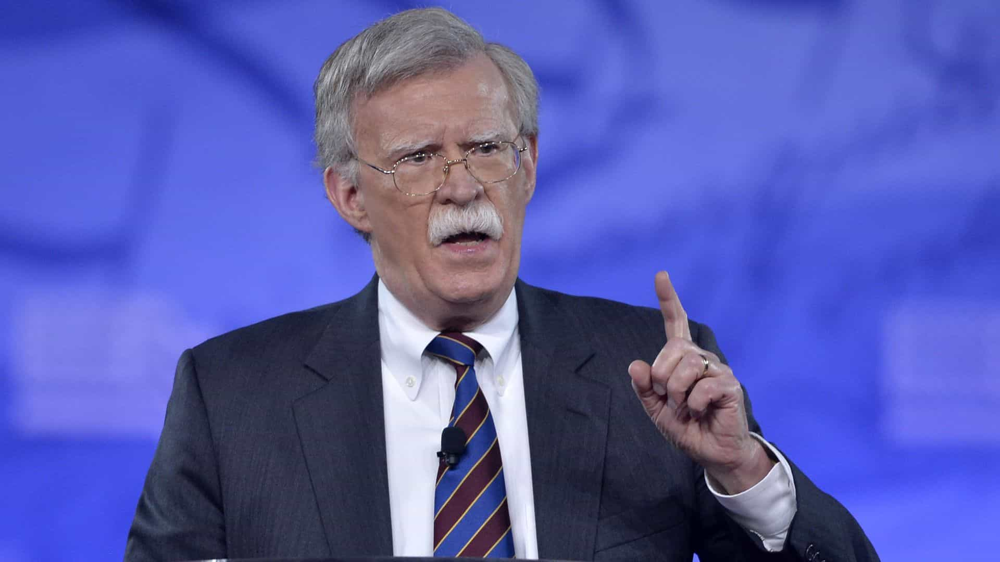
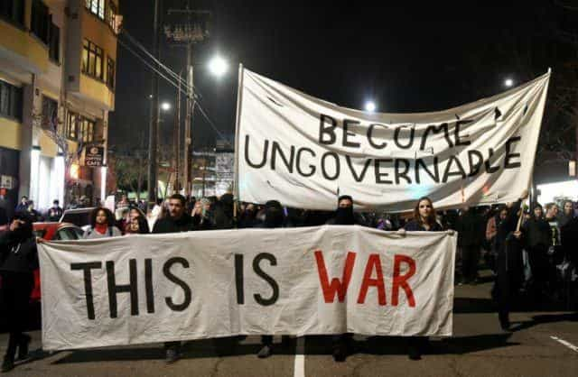

Julius is a right-wing enthusiast who lives incognito among the degenerates of North America. He dreams of a return to more normal times.


Many of us on the political right were ecstatic about Donald Trump’s campaign since he represented our frustration with the worthless GOP. A massive contingent of his supporters mobilized to trigger as many leftists as possible during the presidential race. On November 8, 2016, Trump declared victory, and supporters across the US celebrated achieving the impossible.
Sixteen months later, it is clear that we vastly overestimated Trump, and the American political system itself. Not only has the President not fulfilled most of his key promises, he has done a 180-degree turn in multiple areas. Whether these flip-flops were Trump’s personal wishes or those of the deep state, they have proved that America is doomed to follow a globalist trajectory, as long as the political system remains the same.
Trump’s most prominent campaign promise was the strict enforcement of immigration law, including the construction of a large wall on the Mexican border, funded by Mexico. Such a proposal was unheard of, as both parties openly supported amnesty for illegal aliens. However, as Trump progressed through his first months in office, his promises became more and more diluted. First, he said that parts of the wall would consist of fencing. Then came the revelation that Mexico had no intention of paying for it.
As for immigration enforcement in general, Trump backpedaled on DACA, and deportations did not increase by a significant percentage. While the deportation of the entire illegal immigrant population was infeasible for obvious reasons, Trump’s immigration policy so far looks like that of any other Republican.
The most recent update on the immigration situation came just a while ago, when Trump unexpectedly signed the $1.3 trillion-dollar omnibus bill that arrived at his desk. The bill was an obscenity that funded many Democrat and globalist initiatives, as well as failed to provide any funding for the wall.
Most astoundingly, however, was that Trump himself claimed that he wished DACA had been funded. For a man who was so passionate on the campaign trail, it is hard to accept that Trump willingly did an about-face on something as highly disliked by his supporters as DACA. If President Trump really wants to keep his base from deserting him, he should start off with making real commitments to change immigration law.

Another major tenet of Trump’s campaign was that of American non-interventionism. Trump’s call for détente with Russia was a far cry from most other Republicans, whom had been shilling for the military-industrial complex. Unfortunately, Trump lapsed into warmongering within a few months of his presidency.
In the beginning of April 2017, Rex Tillerson and other members of the President’s cabinet announced that regime change in Syria was no longer a key aim of theirs. Several days later, there was a “Sarin gas” attack in an Al-Qaeda opposition-controlled area of Syria, which was immediately blamed on President Assad. Without a single shred of evidence, the Trump administration began agitating for war in Syria. This hysteria ended in the firing of 49 Tomahawk missiles at a Syrian Air Force base.
To many observers, including yours truly, this was a painfully obvious false flag attack. After all, why would the Syrian government have massacred civilians with nerve gas a mere days after their most powerful enemy said they had lost interest in toppling them?
Trump has also been bought out by the Saudi lobby, going as far as to commemorate the opening of a center to combat “global extremism” in the Saudi capital. This is akin to a center to promote free speech being opened in Pyongyang. In addition, Trump copied the Saudi/Israeli propaganda line to explain all the evils of the world: Iran. This despite that fact that all major terrorist attacks in the west over the past two decades have been connected either with Saudi Arabia or with an ideology that is promoted by them.
Trump also recently started filling his inner circle with neoconservatives, including John Bolton, an overzealous, Bush-era war hawk. It is very possible that a war with Iran could erupt any moment due to the hunger for war in the administration. Such a conflict would be disastrous, and would be exponentially deadlier and longer than Bush’s Iraq debacle. All of this warmongering and regime change promotion flies directly in the face of Trump’s America First platform, and represents 180-degree turn on foreign policy.

The area in which Trump’s policies are having the least effect is American culture. This cannot be blamed on the President, but serves more as an indication of how useless the President really is when it comes to the direction of American society.
One would think that after such a shitlord is elected as president, free speech would be enhanced. Instead, the exact opposite has happened. Right-wingers have been getting no-platformed and banned across the landscape of communication. The mass hysteria following the Charlottesville incident gave corporations the excuse they needed to set off mass purges of thought criminals. Even people who stated basic facts were not safe from the thought police, as could be seen with James Damore.
So the question arises: how is a president supposed to influence culture without becoming a totalitarian? Since all the networks that dissidents utilize are controlled by corporations, they can be harassed and denied service based on their political beliefs.
Here is where the “free speech” argument runs into a problem: free speech is guaranteed by the US constitution, which concerns itself with what the government can and cannot do. Not corporations. Corporations are completely free of government interference and influence. Before the libertarian in you says “Yeah, that’s the point of capitalism!” understand that these companies operate based on the whims of their shareholders. Since American culture has become so PC and degenerate, it is now considered “trendy” to dox, harass, and threaten anyone who doesn’t agree with the diversity/feminist/Marxist agenda.
If you get banned from social media for expressing an unorthodox opinion, guess what? You can’t do shit about it. You can cry “muh free speech” all you want, but corporations are not beholden to constitutions. All of this is why, despite the election of Trump, American society will continue to shift leftwards without a major disruptive event.
As one can see, the person who holds the office of president matters little on the political chessboard. Donald Trump is on track to be a typical Republican president, minus all of the flair that was present during his campaign. For real change, there must be a societal upheaval that uproots the diseased institutions that currently make up the country.